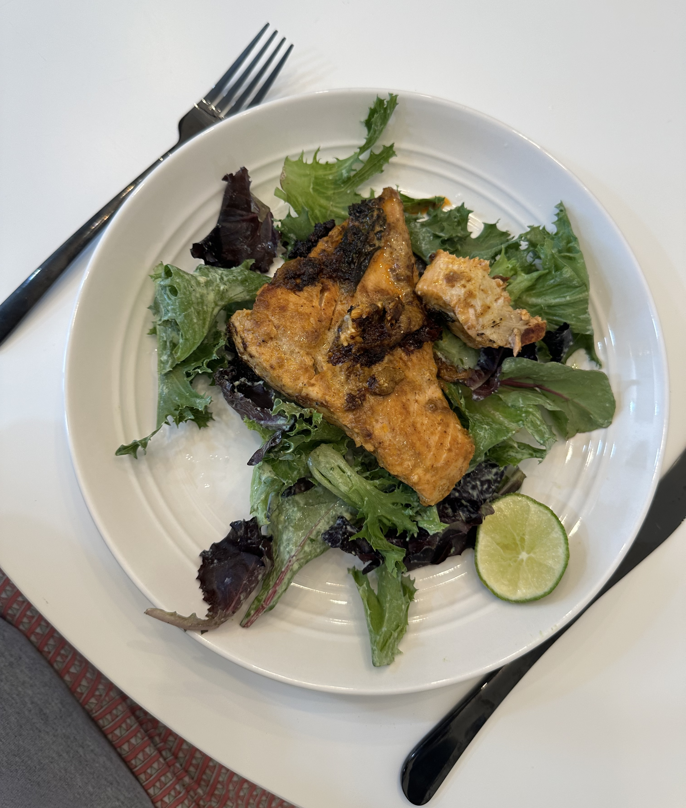
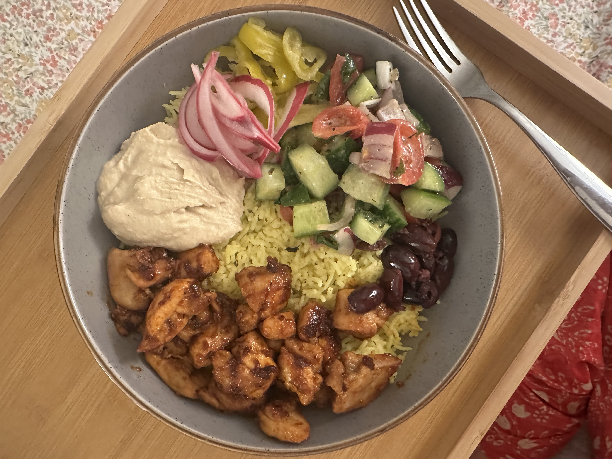

Hobbies
Curiosities that
show up in my work.
These aren't unrelated to the analytical work — they're where I practice noticing patterns without a spreadsheet in front of me.
Cooking & baking
I've been cooking and baking since sixth grade, and I'm a big foodie — always trying new
restaurants and dishes around San Diego. A few favorites: Seneca, Callie, Taco Stand,
Din Tai Fung, and Ramen Nagi.
Reading
Fiction and mystery mostly, though I'm open to almost anything. Lately I've been drawn to
books that help me step away from work and assignments for a bit.
Art & sketching
I started college as a studio arts major before switching to finance and data analytics,
so painting and sketching have always been part of who I am — and creativity still shapes
how I work.
Gaming
A big fan of video games — I've played all the Uncharted games, some Call of Duty, and
especially love co-op adventures like It Takes Two, Split Fiction, Mario Kart, and Overcooked.


